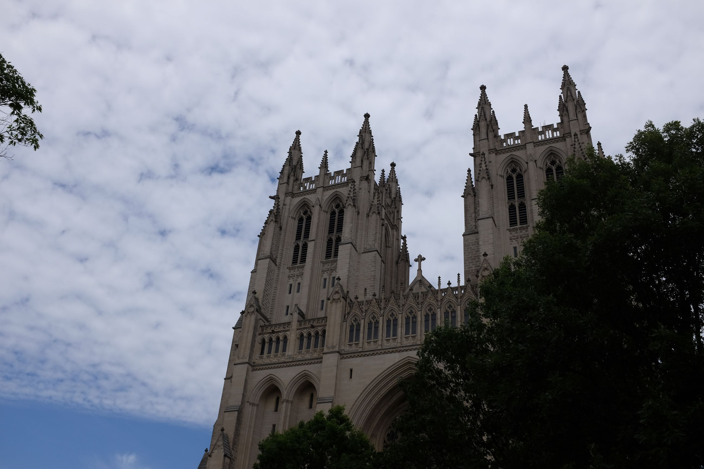
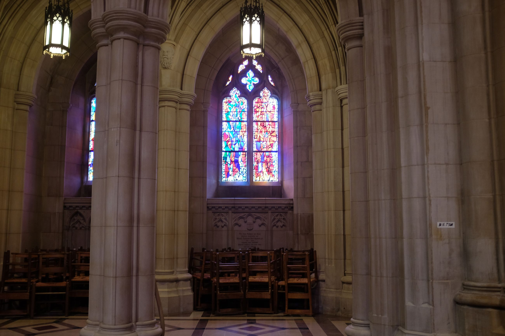
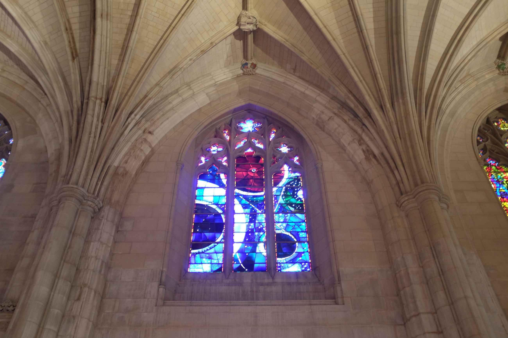
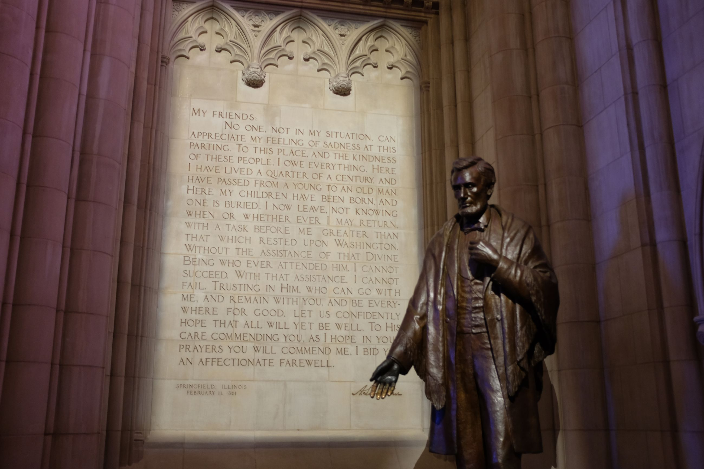
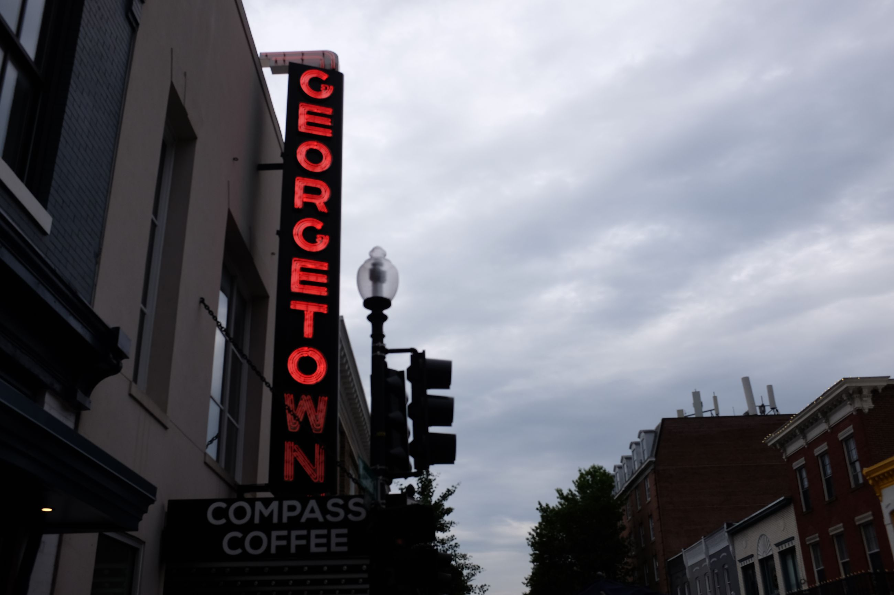
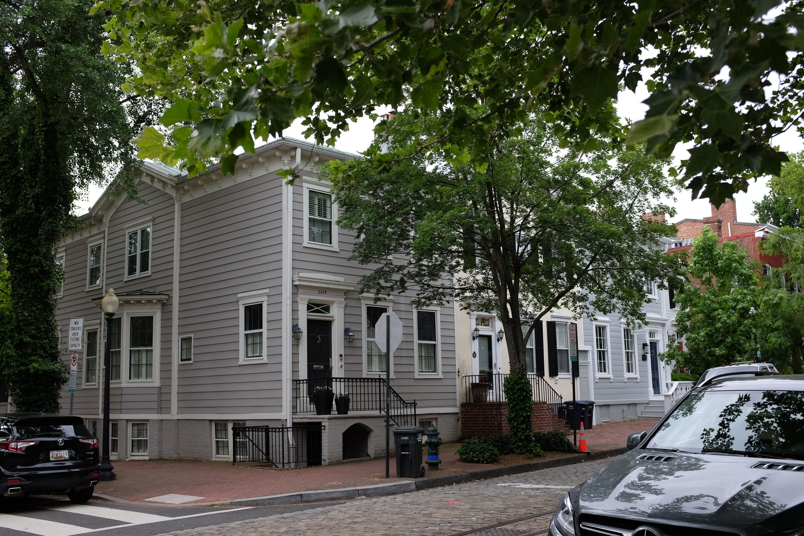
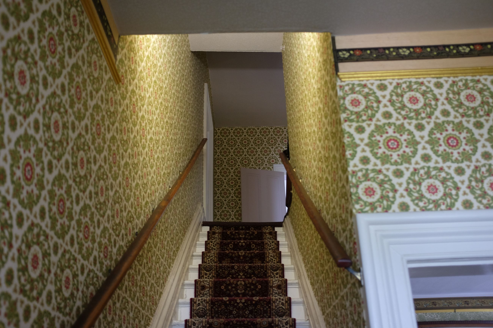
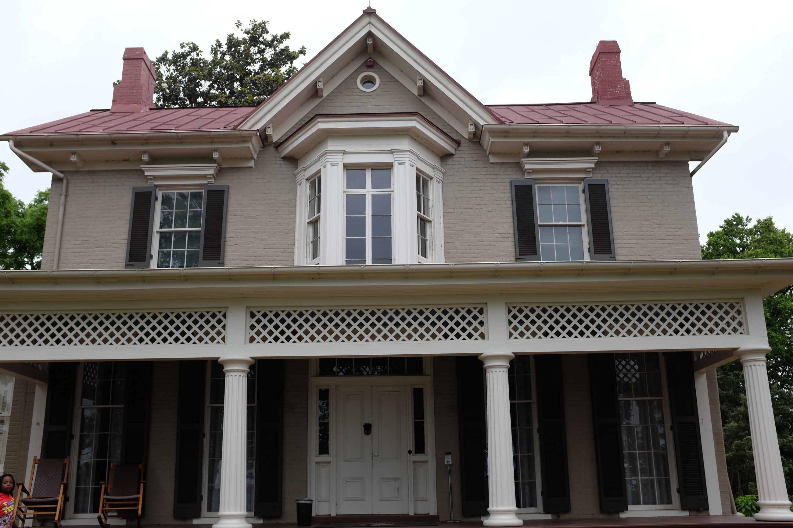

Post Trump election, people say that the mood is very gloomy. Most people here seem highly educated, ambitious and passionate about their cause. A selection effect of choosing to live here.
Part of the trip was to visit some colleagues in the Washington D.C. office of my company, but another half was to give D.C. another go. I remember coming at 20, I had mad culture shock. The boat shoes, sweaters around the neck, the yachts, the types of people -- all so different from California. I didn't like it much. But visiting while older and having seen more of the world, D.C. felt elite in the best way because of that passion for causes and the future of the world. They felt empowered.
And D.C. also has some interesting sites. One is the Cathedral. One thing we learn in history class growing up is the separation of Church and State. This Cathedral is anything but that. While it serves as a place for Catholic worship, there are also traces of politics in its infrastructure. Stain glass windows show Black Lives Matter protests; a statue of Abraham Lincoln stands at the centre-left. It's the most bizarre thing.
   
D.C. is also similar to New York City in that the different areas are close to each other. From the Cathedral, down Wisconsin Avenue, you hit the area of Georgetown. Georgetown has the charm of a small, New England style town. Houses are two stories, painted a simple pastel colour and modest in their presentation.
 
My cousin, whom I stayed with, lives in Anacostia. Anacostia is the predominantly black neighbourhood, and once you cross over, the houses maintain the D.C. facade with a twist: they hang out on their porch. There are much more black folks walking around, hanging out and exchanging friendly chatter.
One site here is the Frederick Douglass House, belonging to the late abolitionist in his later years (around the late 1800's). It sits atop a hill overlooking the DC area. The exterior looks humble, with white pillars propping up a second floor with a bay window overlooking D.C. There is a porch. Inside is all the dandyism of what I would think existed in a slave house: a creaky wooden floor, a staircase with a carpet and crazy, flowery wallpaper. Apparently, Douglass wanted traces of his people's history in the house. 85% of the house is in its original state, including its original items.
 
The tour guide said that being able to step inside this is already a luxury. It was in disrepair for much of its existence and refurbished and opened to the public in the 1970's. Again during covid, the House closed due to a restriction on funds and social distancing. When it reopened, tours were run only every third day (as opposed to every day before covid). The security of funds speaks to the larger part of "living history" -- that it must be preserved, maintained, and most importantly funded for, otherwise we lose this small piece of history.